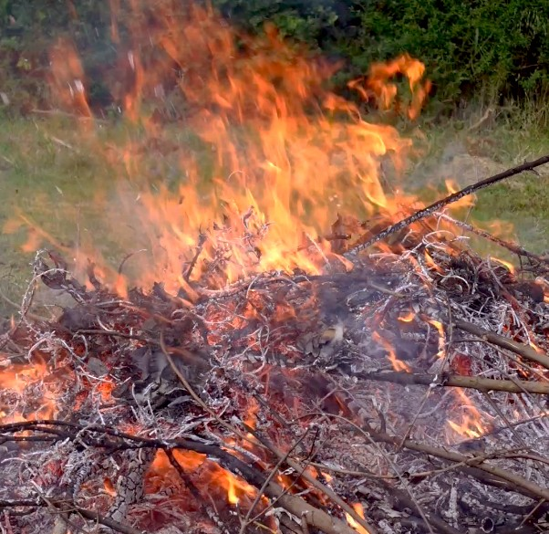
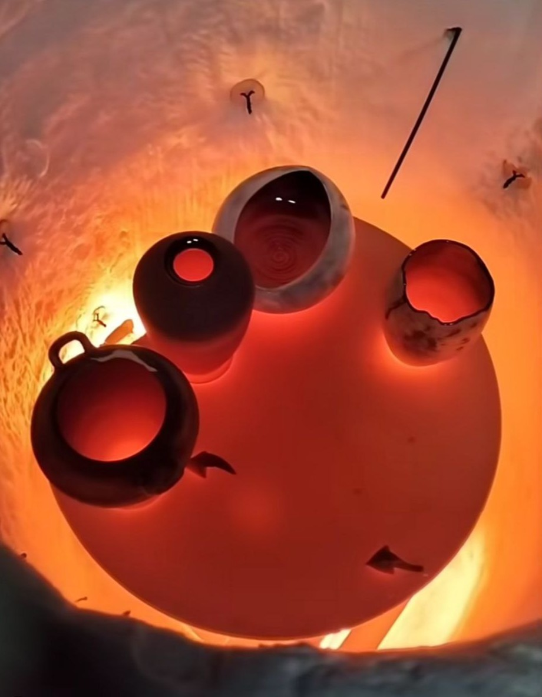

Our Firing Techniques
Raku Firing
The origins of Raku date back to 16th-century Japan. It is theorized that the technique began as a practical necessity: potters would pull test pieces from wood-fired kilns while they were still red-hot to check the melting point and maturity of the glazes. This immediate extraction became a deliberate artistic practice, deeply tied to the Zen philosophy and the wabi-sabi concept of finding beauty in imperfection.
The traditional Japanese method focuses on the thermal shock and the cooling in open air or water. However, the Western (or American) variant, developed in the 20th century, introduced a post-firing reduction phase. In this process, we extract the piece from the kiln at approximately 960-980°C and place it into a container filled with combustible materials like sawdust, leaves, or newspaper. The intense heat ignites the materials, and when the container is sealed, the oxygen is consumed, creating a reduction atmosphere. This lack of oxygen forces the fire to pull molecules from the clay and glazes, leading to distinct results: unglazed surfaces turn deep black through the interaction with smoke, while glazes can develop metallic lusters or intricate crackle patterns.
There is also a Raku variant where pieces are extracted around 500-650°C and immediately touched with organic materials such as feathers, horsehair, or even human hair. The extreme heat sears these materials, leaving behind permanent, carbonized lines that create delicate patterns without the use of glazes.
Raku is a fast-paced, visceral dialogue between oxidation and reduction, where the final result is dictated by the unpredictable energy of the fire.
